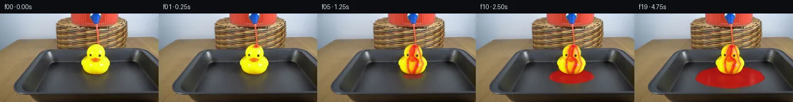

![首帧]()

Round 00
2026-11-05T05:10:43.696815+00:00像素候选变化代码 +378/−0inspection 更新
pixels ec8237678d4c4f47 · code 737b9a6230b458a5
查看本轮 generate.py 真实 diff
--- previous/generate.py
+++ current/generate.py
@@ -0,0 +1,378 @@
+"""Continue the photographed pour using only local analytic RGB compositing.
+
+Run: python generate.py
+There are no learned models, rendered scene engines, or external scene inputs.
+"""
+from pathlib import Path
+import json
+import math
+
+import numpy as np
+from PIL import Image, ImageDraw
+from scipy.ndimage import binary_fill_holes, gaussian_filter, label, map_coordinates
+
+from artifact_io import save
+
+
+ROOT = Path(__file__).resolve().parent
+S = 4
+H, W = 144, 256
+SOURCE = np.array(Image.open(ROOT / "first_frame.png").convert("RGB"))
+assert SOURCE.shape == (H, W, 3)
+BASE = np.array(Image.fromarray(SOURCE).resize((W*S, H*S), Image.Resampling.LANCZOS)).astype(np.float32)
+Y, X = np.meshgrid((np.arange(H*S)+.5)/S-.5,
+ (np.arange(W*S)+.5)/S-.5, indexing="ij")
+
+
+def smooth(a, b, v):
+ q = np.clip((v-a)/(b-a), 0, 1)
+ return q*q*(3-2*q)
+
+
+def blend(canvas, color, alpha):
+ a = np.clip(alpha, 0, 1)[..., None]
+ return canvas*(1-a)+np.asarray(color, dtype=np.float32)*a
+
+
+def upscale(a):
+ return np.array(Image.fromarray(a.astype(np.float32), mode="F").resize(
+ (W*S, H*S), Image.Resampling.BILINEAR))
+
+
+# A source-derived silhouette, including the dark eye holes and white glints.
+# The row edges are measured from the connected yellow component, not supplied
+# by a mask or by another image. Restrict the crown to exclude the woven basket.
+sy, sx = np.indices((H, W))
+r, g, b = SOURCE.astype(float).transpose(2, 0, 1)
+yellow = ((r > 175) & (g > 155) & (b < 150) & (sy >= 50) &
+ (sy <= 98) & (sx > 128) & (sx < 180))
+components, _ = label(yellow)
+sizes = np.bincount(components.ravel())
+sizes[0] = 0
+connected = binary_fill_holes(components == sizes.argmax())
+edges = []
+for yy in range(50, 98):
+ cols = np.flatnonzero(connected[yy])
+ edges.append((yy, float(cols.min())-.35, float(cols.max())+.35))
+edges += [(98, 147.0, 163.8), (98.7, 151.0, 160.0)]
+edge_y, edge_l, edge_r = np.array(edges).T
+left = np.interp(Y, edge_y, edge_l)
+right = np.interp(Y, edge_y, edge_r)
+DUCK = (smooth(left-.45, left+.25, X)*
+ (1-smooth(right-.25, right+.45, X))*
+ smooth(49.4, 50.25, Y)*(1-smooth(98.1, 98.9, Y)))
+
+
+# Recover the basket strip hidden by the original liquid. Horizontal neighbors
+# at the SAME row retain its weave, without generating any background objects.
+clean = SOURCE.astype(np.float32).copy()
+old_stream = np.zeros((H, W), dtype=np.float32)
+for yy in range(21, 50):
+ center = 155.8 + .102*(yy-21)
+ lo, hi = int(math.floor(center-2.4)), int(math.ceil(center+2.4))
+ for xx in range(lo, hi+1):
+ q = (xx-(lo-1))/float(hi-lo+2)
+ bg = (1-q)*SOURCE[yy, lo-1].astype(float)+q*SOURCE[yy, hi+1].astype(float)
+ excess = float(SOURCE[yy, xx, 0])-bg[0]
+ strength = float(smooth(4, 23, excess))
+ # A small feather captures the photograph's antialiased red fringe.
+ strength *= float(1-smooth(2.0, 2.8, abs(xx-center)))
+ old_stream[yy, xx] = strength
+ clean[yy, xx] = SOURCE[yy, xx]*(1-strength)+bg*strength
+CLEAN = np.array(Image.fromarray(np.uint8(np.clip(clean, 0, 255))).resize(
+ (W*S, H*S), Image.Resampling.LANCZOS)).astype(np.float32)
+ERASE = upscale(old_stream)
+CLEAN = blend(BASE, CLEAN, np.clip(ERASE*1.15, 0, 1))
+
+
… diff truncated; 291 more lines …